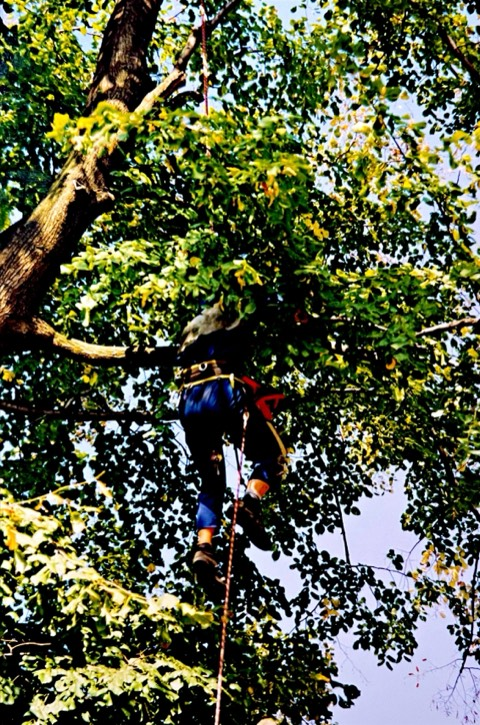

01
Obžagovanje in obrezovanje dreves
Vsak rez ima svoj razlog.
Najprej pogledamo, kaj drevo potrebuje in kaj želite vi. Nato odstranimo samo toliko, kolikor je treba, da je drevo varno in zdravo.
- Suhe, poškodovane in nevarne veje
- Vzgojni in sanitarni rez
- Delo v visokih in razvejanih krošnjah
- Nasvet za nadaljnjo nego